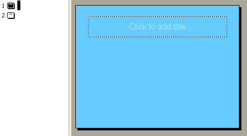
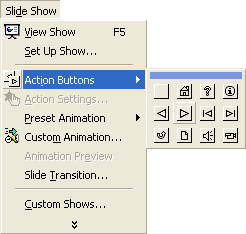
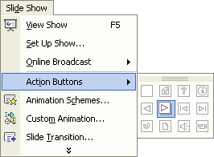
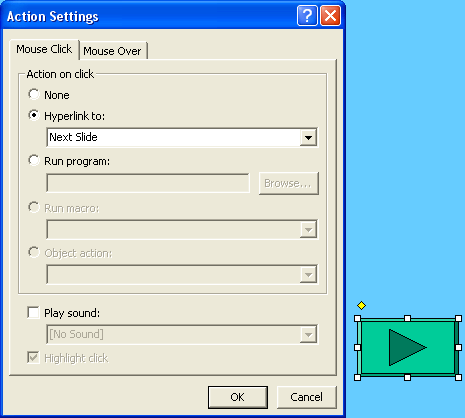

Free
powerpoint
Tutorials
|
Free
powerpoint
Tutorials
|
|
 home home |
Stay at Home and Learn | ||||
PowerPoint Action Buttons |
|||||
|
You can add buttons to your presentations. The main reason for doing so is when you want a presentation that will be viewed when you're not there. For example, you may want to create an educational presentation for your students. They can then navigate through your slides in their own time, by clicking your buttons. When the buttons are clicked they will perform an action, such as advancing to the next slide. Run the PowerPoint presentation called ActionButtons.ppt, which can be found on the resources page. Click the link for PowerPoint Presentation Number Four - Action Buttons. (Save it to your own computer, rather than just left clicking.) The presentation is just to show you what Action Buttons do (but you'll be creating one just like it shortly). You'll see navigation buttons starting on the first slide. Click the buttons and they take you backwards and forwards through the presentation. At the end, there is a button that ends the slide show. There is also a hyperlink button that starts a browser and displays a web page. But take a look at the presentation, and click all the buttons to see how they work. Notice that the next slide won't appear unless you click a button. To make a start in creating a slide show like the one above, click File > New from the PowerPoint menu bar. On the General tab of the New Presentation dialogue box, or in the Task Pane, select the Design Template you created in the previous section. (If you didn't complete this section, just select Blank Presentation. But we're going to assume that you did!) When the new presentation is created, your screen may look like this (click View > Normal, if it shows you a Master Slide):  You can add any Title you like, but we typed this: Action Buttons To add your first action button, click Slide Show > Action Buttons from the PowerPoint menu bar at the top:  PowerPoint 2000
 PowerPoint 2003
From the Action Buttons submenu, select the forward arrow (row 2, second from the left). Nothing will happen when you click the forward arrow. That's because the buttons are objects that you need to draw on your slides. So move your mouse pointer over to your slide. Hold down your left
mouse button. Keep it held down and drag out a rectangle shape (any
size). When you let go of your left mouse button, you'll see a dialogue
box pop up:  The Action Settings dialogue box lets you choose what happens when the button is clicked. Because you drew a forward button, it automatically gets set to Next Slide, under Hyperlink to. We'll see other options on this menu soon. But for now, just click OK. When you click OK, you'll see your new button on the slide, and it will be selected, as in the image above.
Your button may be too big, however, and in the wrong place. In the next part, you'll see how to remedy this. |
||||